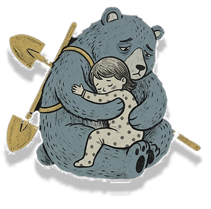

Reporte
O seu relato é fundamental para protegermos infâncias em risco. Forneça o maior número de dados sobre onde a criança está e o que ela está sendo submetida a fazer. Agradecemos sua ajuda!
Processo da denúncia
Nossa equipe analisa o relato e aciona imediatamente os órgãos oficiais competentes, como o Conselho Tutelar, ONGs e redes de proteção locais, para checar a situação. Todo o processo é acompanhado para garantir que a criança seja protegida e ajudada o mais rápido possível. Seus dados de contato são mantidos em absoluto sigilo e serão usados apenas se precisarmos confirmar algum detalhe.
Obrigado por Denunciar!

Sua denúncia foi encaminhada com sucesso!
Sua denúncia foi registrada e será encaminhada imediatamente aos órgãos de proteção competentes, como o Conselho Tutelar e a rede de fiscalização, para averiguação da situação. As autoridades responsáveis poderão entrar em contato com você.
Cada denúncia interrompe um ciclo de exploração e ajuda a devolver o direito de ser criança.
A equipe Sem Recreio agradece por você não desviar o olhar.